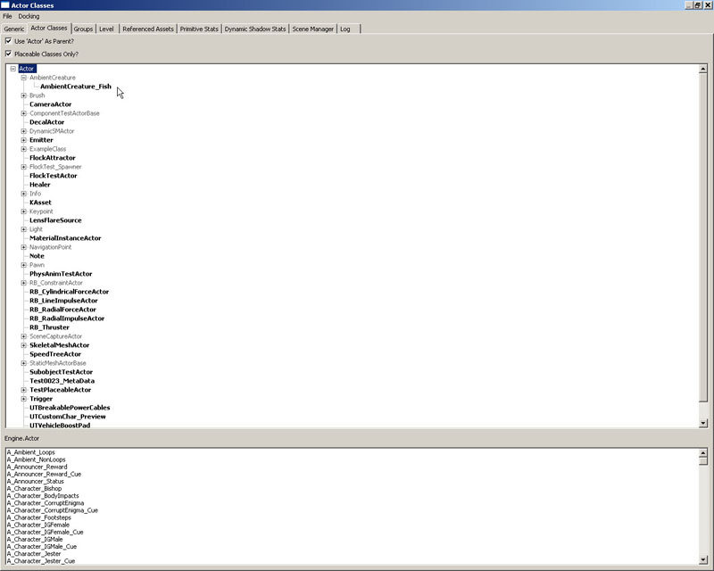
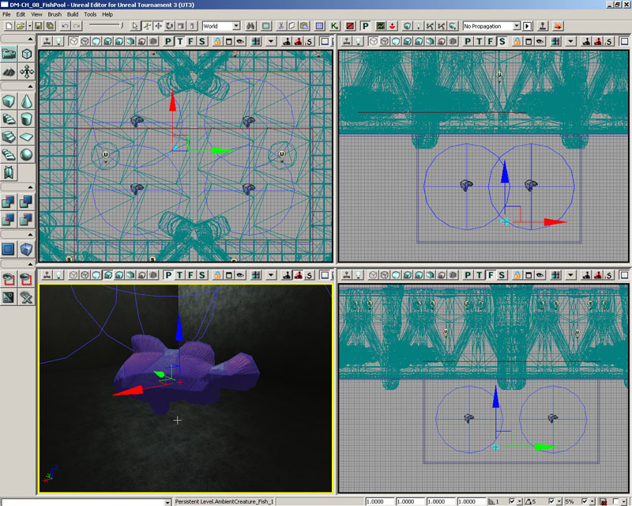
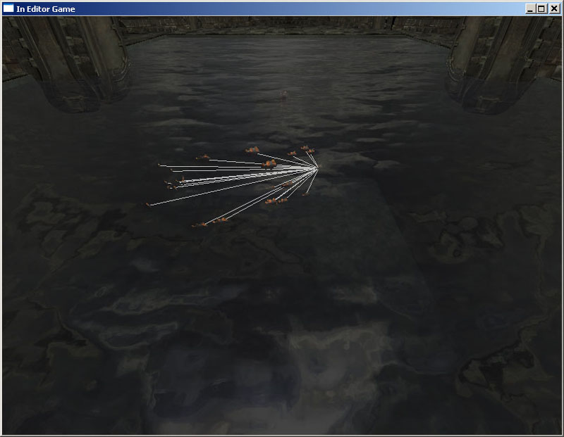
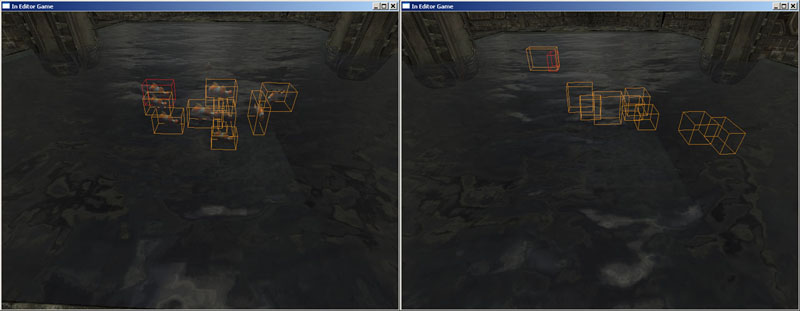
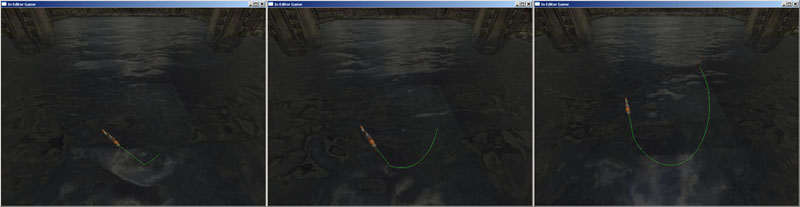
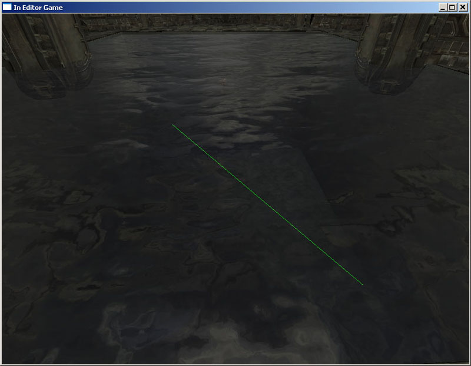
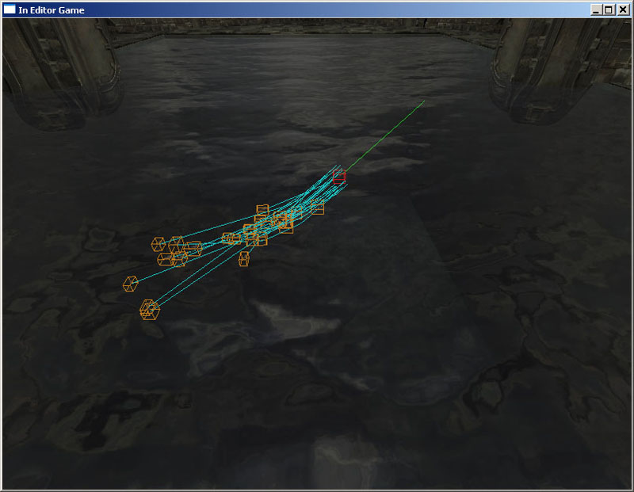

UDN
Search public documentation:
MasteringUnrealScriptPreProcessorCH
English Translation
日本語訳
한국어
Interested in the Unreal Engine?
Visit the Unreal Technology site.
Looking for jobs and company info?
Check out the Epic games site.
Questions about support via UDN?
Contact the UDN Staff
日本語訳
한국어
Interested in the Unreal Engine?
Visit the Unreal Technology site.
Looking for jobs and company info?
Check out the Epic games site.
Questions about support via UDN?
Contact the UDN Staff
- 第九章 – UNREALSCRIPT预处理器
- 9.1概述
- 9.2 MACRO(宏)的基础知识
- 指南 9.1 –您的第一个宏
- 9.3具有参数的宏
- 指南 9.2 – MACRO参数
- 9.4内置宏
- 指南 9.3 –使用Include(包含)文件
- 9.5命令行开关
- 指南 9.4 –可视化的调试模式：第一部分：设置Include(包含)文件
- 指南 9.5 – 可视化调试模式,第二部分:条件化的INCLUDE(包含)语句
- 指南 9.6 –可视化的调试模式, 第三部分:全局变量bShowDebug和生物变量的初始化。
- 指南 9.7 - 可视化的调试模式, 第四部分:隐藏网格物体
- 指南 9.8 – 可视化调试模式, 第五部分:描画领头者的指示器
- 指南 9.9 - 可视化的调试模式, 第六部分:成群生物的可视化指示器
- 指南 9.10 –可视化调试模式, 第七部分: 测试
- 9.5总结
- 附加文件
第九章 – UNREALSCRIPT预处理器
虚幻引擎3的其中一个新更新是UnrealScript预处理器。如果您熟悉C++中的预处理器，那么您将会非常容易适应UnrealScript中的新的预处理器。如果您不知道什么是预处理器，那么请不要担心；我们将在这个指南中简单地讲解关于它的内容。9.1概述
以最简单的方式来说，预处理器只是一个改变文本的替换工具。一个预处理器用于使用其它文本替换您的源码文件中的文本，我们把它称为宏。它也用于根据特殊的编译器指令包含文件中的某些代码，也称为条件编译，当需要在不同的平台上书写不同的代码时这是非常有用的。 需要记住的是预处理器是在编译所有脚本之前进行调用的。9.2 MACRO(宏)的基础知识
为了实际地在我们的脚本中使用宏，我们必须定义一个宏，我们使用内置宏定义进行定义。稍后我们将会对内置宏进行深入地介绍，但宏的基本定义如下所示：`define MyFirstMacro “This is really my first macro.”您会注意到宏是以` (反引号)开始的,后面跟着一些空白(这个可以是tab键、空格或者任何这些字符的组合物)。接下来是宏的名称。这是我们稍后在脚本中要使用的东西。注意宏的名称必须不能包含任何空格。最后是宏指令体的定义。这个宏指令体是可选的。您可以定义没有宏指令体的宏。这样的宏在某些情况下可以用于替换的目的，同时当在预处理器的If语句中使用它时也是非常有用的。 注意：在include(包含)文件中,忽略宏指令体的定义可能会产生问题。我们将会在本章稍后进一步讲解这个问题。 当我们使用宏时，我们遵循同样的规则。如果我们想在源码文件中使用我们上面定义的宏，我们可以输入以下代码：
`MyFirstMacro这将会展开`MyFirstMacro，把使用“This is really my first macro.”来替换它，包括引号。 同样，我们可以输入以下语法来展开宏：
`{MyFirstMacro}
如果我们想在其它不方便放置空白空间的文本的内部展开宏时，这种方法是有用的。其它时候，因为它看上去更加清晰，并且因为我们很容易忽略反引号字符，所以我们也会使用这种形式。
some`{MyFirstMacro}code
预处理器把它转换为：
some“This is really my first macro.”code当预处理器展开宏时，它将会重新扫描展开后的宏，来查看展开后的宏是否还包含其它的需要展开的宏。由于这个原因，在使用这功能时要非常小心，否则您可以陷入到宏展开的递归循环中。注意以下示例：
`define hello This macro will infinitely recurse because of the `hello usage. `hello
指南 9.1 –您的第一个宏
在本指南中，您将定义一个简单的宏，稍后将会在现有的类中使用这个宏，来展现宏的基本替换行为。特别的是，这个宏将会被定义在包含一个或多个类修饰符的类定义的前面。然后将会在类声明中使用这个宏，把在宏中定义的修饰符添加到类的声明中。 1. 打开ConTEXT和AmbientCreature.uc脚本。 2. 把光标放到脚本的开始出，按下回车键几次来把整个类的内容向下移动几行。 3. 返回到脚本的第一行，定义一个新的名称为ClassSpecs的宏。`define ClassSpecs现在已经有了一个名称为ClassSpecs的宏了，但是此时还没有宏的指令体。 4. 在ClassSpecs留出一个空格，然后加上类修饰符Placeable，所以最终的定义如下所示：
`define ClassSpecs placeable这将会使得关键字placeable被插入到任何使用这个宏的地方。 5. 在类声明中的Actor关键字的后面 ; 结束符的前面添加一个空格，然后把ClassSpecs宏放到那里，并向宏的声明上添加修饰符。
class AmbientCreature extends Actor `{ClassSpecs};
注意，花括号用于确保宏周围的空白是有效的。否则，那个声明展开后可能如下所示：
class AmbientCreature extends Actorplaceable;6. 编译脚本，然后打开UnrealEd。现在您不仅看到AmbientCreature类作为可放置的类出现在Actor浏览器中，而且您也应该看到AmbientCreature_Fish类列在Actor浏览器中，因为它继承了AmbientCreature类的placeable修饰符。关闭虚幻编辑器。

图片 9.1 –AmbientCreature和 AmbientCreature_Fish类都是可放置的。 7. 现在，在ClassSpecs宏定义的内部，在placeable修饰符的前面添加abstract修饰符。定义应该如下所示：
`define ClassSpecs abstract placeable8. 再次编译脚本并打开虚幻编辑器。在Actor浏览器中，您应该会看到这两个类都列了出来，但是这次AmbientCreature类呈现为灰掉状态，这表明它不是一个可以放置的类，因为它已经被声明为抽象类了。您可以看到放到宏指令体中的任何内容都会被插入到类声明中宏出现的地方。

图片 9.2 –现在，仅AmbientCreature_Fish 类是可放置的。 9. 保存具有新的宏的文件，因为我们将会在下一个指南中使用它。 <<<< 指南结束 >>>>
9.3具有参数的宏
创建接受参数作为输入的宏是可以的。在很多情况下，它和函数类似，但是它不是被计算而是被展开。由于这个原因，某些类型的宏会比执行同样功能的函数具有更好的性能。 标准的宏定义如下所示：`define <macro_name>[(<param1>[,<param2>...])] [macro_definition]如果这个定义看上去是令人费解的，那么没有问题，我们可以看几个例子。 实例: 创建求一个数的三次方的宏 宏的定义如下所示：
`define Cube(x) `x * `x * `x创建了一个名称为Cube的宏，它取入一个名称为x的参数。展开项是x * x * x，可以使用任何传入的参数来替换x。注意，当引用参数的名称时，您必须在它的前面加上`(反引号)。 要想使用这个宏，我们需要做以下事情：
var int myVal = `Cube(3);非常需要注意的是：当调用宏时，( (开始圆括号)必须直接跟在宏的后面；不能有任何空格出现。 实例:创建求两个数之和的平方的宏 这个宏将会计算两个数的和，然后求那个结果的平方。
`define SumSquare(x, y) (`x + `y) * (`x + `y)为了使用这个宏，我们写了如下的代码：
var int myVal = `SumSquare(5, 3);和函数一样，使用逗号来分隔两个参数。但是，和函数不同，宏参数没有提供绝对的类型保护。比如，我们书写以下代码，宏将会按照它应该遵循的方式进行展开：
var int badVal = `SumSquare(p1, p2);最终的展开结果是：
var int badValue = (p1+ p2) * (p1+ p2);现在，如果p1和p2真的被定义为某个整型变量，那么这可以按照期望的方式工作。但是，预处理器不会对类型进行任何验证，因此您最终可能获得一些不能编译的代码。 注意，虚幻预处理器将会吞掉宏表达式间的空格字符。所以如果您想让您的输出如下所示(注意到p1后面的空格)：
var int badValue = (p1 + p2) * (p1 + p2);那么您需要使用{}(花括号)把您的宏包围起来，如下所示：
`define SumSquare(x, y) (`{x} + `{y}) * (`{x} + `{y})
在这个实例中出现的空格没有什么关系，但是它确实是一个潜在的问题，所以请记住这个事实。
指南 9.2 – MACRO参数
本指南将会在上一个指南中获得的知识上进行展开，来创建使用参数的新的宏。这个宏从本质上和函数类似，它允许我们声明新的变量。 1. 打开ConTEXT和包含前一个指南中的变更内容的AmbientCreature.uf脚本。 2. 在ClassSpecs宏定义下，使用以下的参数定义一个名称为NewEditvar的新的宏：`define NewEditVar(varCat,varType,varName)3. 现在，我们将添加宏的指令体。这个宏的目的是声明一个新的可编辑变量，以便宏的指令体呈现为使用宏参数的变量声明的形式。按照以下代码添加宏的指令体:
var(`varCat) `{varitype} `{varName}
所以完整的宏定义如下所示：
`define NewEditVar(varCat,varType,varName) var(`varCat) `{varitype} `{varName}
再次，我们已经使用了花括号来保持空格的一致性。
4. 现在，我们使用这个宏来在AmbientCreature类中声明一个新的可编辑变量。在类声明后，声明一个名称为bMacro布尔型变量，之后我们将通过添加以下代码来把该变量添加到Macro类别中：
`NewEditVar(Macro,Bool,bMacro)5. 编译脚本并打开UnrealEd。由于之前的指南中进行的修改，AmbientCreature_Fish类现在应该是可以放置的。通过在Actor浏览器中选择它，右击视口并选择Add AmbientCreature_Fish Here(把AmbientCreature_Fish添加到这里)来添加一个这个类的实例到地图中。

图片 9.3 –把新的AmbientCreature_Fish actors 放置到了地图中。 6. 双击新的actor来打开属性窗口。将会出现一个Macro类别。展开这个类别，您便会看到列出的bMacro属性。这个宏用于插入适当的代码来声明新的变量。

图片 9.4 –通过使用这个宏添加了bMacro 属性。 在这例子中，宏代码并不比直接通过手动书写的声明更加高效，但是在您的mod开发中可能会出现这种情况，那时您会发现通过使用这种宏，您可以大大地提高重复性任务的执行效率。 7. 保存具有新的宏和变量声明的文件。我们将在接下来的指南中使用它们。 <<<<指南结束>>>>
9.4内置宏
UnrealScript已经为我们定义了一些内置宏。这部分将逐个看一下这些宏，并提供一些关于如何使用它们的实例。DEFINE
这个宏用于定义其它的您想使用的宏。指定的宏将会展开为特定的定义；如果没有提供定义，那么它将会展开为空的字符串。 The formal definition is: 正式的定义是：`define <macro_name>[(<param1>[,<param2>...])] [macro_definition]注意当使用具有参数的指定宏时，( (开始的圆括号)必须直接跟在宏的名称的后面，并所有列出的参数都是无类型的、由逗号分隔的列表。 需要定义一个特殊的宏：`#。这个宏代表指定的参数的数量，仅能在宏定义总是用它，比如：
`define MyMacro(p1, p2, p3, p4) “This macro contains `# parameters.” var string myString = `MyMacro(1, 2, 3, 4);上面的MyMacro宏的展开形式是：
var string myString = “This macro contains 4 parameters.”;
IF/ELSE/ENDIF
if, else和endif用于支持条件编译；也就是，在编译时，包含或排除特定的代码块。当需要为特定平台提供特定实现时这是有用的。 The formal definition is: 正式的定义是：`if(<value>) `else `endif如果它被展开为非空字符串，那么If-语句中的值为真，否则认为它的值为假。当这个值计算为真时，将会把If和else之间的所有文本放到文件中。否则将使用else和endif宏之间的文本。 需要注意的是else宏是这个机构中的一个可选部分；也就是，仅有if和endif宏组成的代码块也是有效的。
实例: IF/ELSE/ENDIF的应用
在这个实例中，我们将定义一个宏，并根据那个宏的计算结果是否是空字符串来包含一段代码。`define MyIfCheck “Yes” var int myValue; `if(`MyIfCheck) myValue = 10; `else myValue = 20; `endif当然，如果MyIfCheck的值不总是为“Yes”时它将会更加有用，但是我们稍后将会学习如何通过命令行选项来完成这个功能。 实例: NESTING IF/ELSE/ENDIF 宏 有时候我们需要判断不止一个条件。我们可以使用两种方式来达到这个目的；由您来决定您更喜欢哪种方式。 两种方法都假设以下的宏被定义为非空字符串：PC, XBOX360或PS3。 方法 1:
`if(`PC) // The code to execute for the PC would go here(PC执行的代码在这里) `else `if(`XBOX360) // The code to execute for the Xbox 360 would go here(Xbox 360执行的代码在这里) `else `if(`PS3) // The code to execute for the PS3 would go here(PS3执行的代码在这里) `endif方法 2:
`if(`PC) // The code to execute for the PC would go here(PC执行的代码在这里) `endif `if(`XBOX360) // The code to execute for the Xbox 360 would go here(Xbox 360执行的代码在这里) `endif `if(`PS3) // The code to execute for the PS3 would go here(PS3执行的代码在这里) `endif上面的两种方法都能保证根据运行平台来执行特定的代码块，但是其中一个比另一个更加简明。
INCLUDE
include宏用于在当前位置包含另一个文件的内容。Include宏如下所示：`include(<filename>)默认情况下，认为filename(文件名)是和游戏的INI文件中的Editor.EditorEngine部分的EditPackagesInPath设置指定的目录相关的。当filename(文件名)不包括目录路径时，编译器将首先在UTGame/Src目录中进行查找，然后会在当前编译的包的根目录中进行查找。 Include(包含)文件中可以包含任何正常的.uc UnrealScript文件可以包含的代码。该文件中的代码将会被插入到包含这个宏的任何脚本中。尽管它们可以有很多扩展名供您选择，.uci(UC Include的简称)是最常用的扩展名。这本书中的所有include(包含)文件都将使用这个扩展名。 需要注意的是：在包含文件中定义没有宏指令体的宏可能会导致编译错误，特别是如果这个定义是文件的最后一行时。只要在这个声明后面放一小段其它的代码，甚至是一个注释便可以消除该问题。
ISDEFINED/NOTDEFINED
isdefined宏用于判定指定的宏是否已经被定义；如果这个宏已经被定义，那么宏的值将是“1”。 Isdefined宏如下所示：`isdefined(<macro_name>)notdefined和isdefined类似，除了它用于判定是否没有定义指定的宏；如果没有定义那个宏，那么宏的值等于“1”。Notdefined宏如下所示：
`notdefined(<macro_name>)这些两个宏都经常在条件编译中使用。
示例: 结合使用 IF/ELSE/ENDIF 和 ISDEFINED/NOTDEFINED
在前面的判断特定平台的宏定义时我们总是假设这些宏等于某个非空字符串。但是，我们希望使用更加健壮的方法来判断这些条件。这便是isdefined和notdefined宏真正的作用。`define MyCode `if(`isdefined(MyCode)) // This block will be included because MyCode has been defined(这个代码框将会被包含，因为已经定义了MyCode宏。) `endif `if(`notdefined(MyCodeNotDefined)) // The block will also be included because MyCodeNotDefined has NOT been defined(这个代码块也将会被包含，因为还没有定义MyCodeNotDefined宏。) `endif上面的示例可能和前面的if/else/endif宏的示例有点类似，但是请记住if宏仅对于非空字符串为真。如果上面示例中MyCode等于一个空字符串，并且如果我们也没有使用isdefined宏，那么if宏的值将等于假，将不会包含那段代码块。
UNDEFINE
undefine宏用于删除指定宏的当前定义。它如下所示：`undefine(<macro_name>)需要注意的是您不能取消对参数名称的定义，比如`#。
LOG/WARN
log和warn宏是Object.uc中声明的LogInternal 和WarnInternal函数的封装，它们对于调试脚本是非常有用的。这些宏的定义如下所示：`log(string OutputString, optional bool bRequiredCondition, optional name LogTag); `warn(string OutputString, optional bool bRequiredCondition);如果指定了bRequiredCondition，那么将会在执行脚本的过程中计算条件的值，以便是否需要记录消息。 如果使用–final_release开关来编译脚本，那么将会禁用这两个宏。
LOGD
除了仅当您的脚本以调试模式进行编译时才计算这个宏外，Logd宏实际上和log宏是一样的。`logd(string OutputString, optional bool bRequiredCondition, optional name LogTag);如果使用–final_release开关来编译脚本，那么将会禁用这个宏。
ASSERT
这个宏是对Assert表达式的封装。它对于判断或验证是否满足特定条件是有用的，尤其是在调试时。 assert宏定义为：`assert(bool bCondition);如果使用–final_release开关来编译脚本，那么将会禁用这个宏。
示例:验证条件
这个示例将把两个数相加，并对它们的和进行断言检测。var int x = 1; var int y = 4; var int sum = x + y; `assert(sum == 4);
指南 9.3 –使用Include(包含)文件
在这个指南中，将会为您介绍包含文件的应用。我们将会把前一个指南中定义的NewEditVar宏移动到一个单独的文件中，然后通过使用`include宏来使得AmbientCreature类可以使用它。 1. 打开ConTEXT和AmbientCreature.uc文件。 2. 如果您愿意，可以创建一个新的文件并设置UnrealScript highlighter(轮廓)。 3. 在AmbientCreature.uc文件中选中NewEditVar宏，通过按下Ctrl+X剪切它。在新的文件中，按下Ctrl+V来把宏定义粘帖到这里。 4. 如果此时已经保存了AmbientCreature.uc文件并编译了脚本，那么将会出现一个错误，因为正在使用NewEditVar宏，但却没有在脚本中定义它。请尝试上面的操作并查看获得的结果。编译器将会呈现出一个那个宏不存在的错误。 5. 通过从File(文件)菜单中选择Save As(另存为)来保存具有宏定义的新文件。向上导航一层目录到MasteringUnrealScript文件夹，并输入AmbientCreature_Debug.uci作为这个文件的文件名。您必须手动地输入扩展名，因为ConTEXT将会尝试根据您所使用的UnrealScirpt模板把它保存为扩展名为.uc的文件。 6. 现在，已经把NewEditVar定义到了先前的AmbientCreature.uc文件中了，添加以下的语句来把新的文件包含到这个脚本中。`include(AmbientCreature_Debug.uci)7. 保存AmbientCreature.uc文件并再次编译脚本。那么这次应该没有关于这个宏的错误了。 8. 打开它的属性并检查Macro类别和bMacro属性是否都已经出现在属性窗口中。通过使用include语句，AmbientCreature_Debug.uci文件中的代码已经被成功地插入到了AmbientCreature.uc文件中了。在这个实例中，我们仅在包含文件中包含了预处理器语句，但是任何您可以把任何UnrealScript代码放到这个文件中，并且可以把该文件包含到任何其它文件中。如果有一个需要在没有相互继承关系的几个类上进行使用的函数时，这是非常有用的。您可以简单地书写一次那个函数，然后通过包含具有那个函数的文件来在任何地方使用它。

图片 9.5 –AmbientCreature_Fish actor 已经被放置在了地图中。 9. 打开它的属性并检测Macro类别和bMacro属性是否都出现在了属性窗口中。

图片 9.6 –bMacro 属性仍然出现在属性窗口中。 通过使用include语句，AmbientCreature_Debug.uci文件中的代码已经被成功地插入到了AmbientCreature.uc文件中了。在这个实例中，我们仅在包含文件中包含了预处理器语句，但是任何您可以把任何UnrealScript代码放到这个文件中，并且可以把该文件包含到任何其它文件中。如果有一个需要在没有相互继承关系的几个类上进行使用的函数时，这是非常有用的。您可以简单地书写一次那个函数，然后通过包含具有那个函数的文件来在任何地方使用它。 10. 在我们继续之前，让我们删除几个添加到AmbientCreature类上的附加物，因为它们是作为演示目的使用的，现在已经不再需要它们。这些附加物包括：
- ClassSpecs宏的定义。
- 在类声明中的ClassSpecs宏的应用。
- 包含AmbientCreature.uci文件。
- 使用NewEditVar宏声明bMacro变量。
9.5命令行开关
当编译脚本时，可以提供命令行开关。这些开关用于改变预处理器的工作行为。DEBUG
当使用这个命令行开关编译脚本时定义了debug宏。当您希望包含特定的功能时这是非常有用的，比如调试信息，但是我们仅在项目开发的测试阶段需要它们。 应用: ut3.exe make –debugFINAL_RELEASE
这个命令行开关用于通知脚本是为最终的发行版本进行编译的。这定义了final_release宏，并且它将会禁用那些封装宏：log, logd, warn, asser。 应用: ut3.exe make –final_releaseNOPREPROCESS
这禁用了所有宏和注释处理；也就是，在脚本编译过程中将不会计算宏。对于我们来说，这不是一个非常有用的命令，但是如果您有一个包含宏调用字符(反引号)的文件，那么您可以使用这个命令行开关。 应用: ut3.exe make –nopreprocessINTERMEDIATE
这个命令行开关用于提供中间处理文件。这在跟踪预处理器的问题时是非常有用的。它是非常耗时的并且会占用大量的磁盘空间，但是有时候这样做是值得的。 这些中间文件存放在: ..\UTGame\PreProcessedFiles\指南 9.4 –可视化的调试模式：第一部分：设置Include(包含)文件
在整个这个系列的指南中，我们将为环境生物创建一个可视化的调试系统，这个系统仅当在使用–debug开关时才会被编译为脚本。它提供了描画显示生物运动路径和其它的可视化指示器的功能，比如代表每个生物位置的方盒。当设计新的类时，这种反馈是非常有用的，但是当在地图中设置actors时，对于设计人员来说它可能不是那么有用。除此之外，事实上将使用这个方法将会大大地降低性能，您或许可以理解为什么我们在编译脚本时会设置它是否是–debug开关的条件了。作为编程人员，通过在–debug模式下编译脚本，我们可以立即并清楚地获得反馈，但同时，我们也可以在编译时排除任何对于设计人员来说不必要的信息，从而保持设置过程尽可能地简单明了。 在这个指南中，我们将关注于设立一个包含文件，该文件包含了一个将要在AmbientCreature 和 AmbientCreatureInfo类中使用的新的结构体的定义。在AmbientCreatureInfo类中，每个CreatureInfo都有它自己的关于这个结构体的实例，所以可以单独地设置它们的视觉反馈。AmbientCreature将具有一个那个结构体的实例来存放从AmbientCreatureInfo传入的属性。 1. 打开ConTEXT 和 AmbientCreature_Debug.uci文件。 2. AmbienCreature_Debug.uci当前包含了NewEditVar宏的定义。如果您想把这个定义留在文件中是可以的，但是如果您不想把这个定义放在这里妨碍您那么您可以自由地删除它。在本章中，我们将不再使用它。 通过把这些代码行添加到脚本中，我们开始声明一个新的名称为DebuggingInfo的结构体。
struct DebuggingInfo
{
};
3. 为了声明这个结构体，我们需要知道这个结构体将包含哪些变量。就绝大部分而言，结构体中的变量是决定是否要描画特定的视觉指示器的布尔变量。这些变量如下所示：
- bShowDebug –所有视觉指示器的全局切换开关。
- bShowFollowPaths –是否描画一个群生物中生物之前的路径的切换开关。

图片 9.7 –描画了一群生物钟每个生物之间的路径的开关。
- bShowLeaderPaths –描画带领一群生物的领头生物之间的路径的开关。

图片 9.8 –描画了带领一群生物的领头生物之间的路径。
- bShowFlockPaths –描画群体中的生物到它们的头领之间的链接的开关。

图片 9.9 –描画了从群体中的生物到它们的头领之间的路径。
- bShowFlockBoxes –是否在群体中的生物所在位置处描画方盒子的开关。

图片 9.10 –在群体的每个生物所在位置处描画了一个方盒。
- bShowLeaderBoxes - 是否在群体生物的领头生物位置处描画方盒的开关。

Figure 9.11 –如果领头是一个生物，则在领头位置处描画方盒。
- bShowMesh –生物的可见性的开关。

图片 9.12 –左侧bShowMesh 是True，右侧bShowMesh 是False 。 现在我们可以按照以下现实的方式在结构体定义中声明每个变量。注意每个变量都应该声明为可编辑的。
var() Bool bShowDebug; var() Bool bShowFollowPaths; var() Bool bShowFlockPaths; var() Bool bShowLeaderPaths; var() Bool bShowFlockBoxes; var() Bool bShowLeaderBoxes; var() Bool bShowMesh;4. 在我们继续之前，还需要两个额外的变量。群体中的生物存储了一系列定义领头者路径的位置。我们简单地选择向生物正在移向的当前位置描画一条路径，或者我们可以使用所有的位置来描画路径。但是，一个更加灵活的函数允许我们在编辑器的属性中设置路径的长度或者描画路径所使用的位置的数量。命名为FollowPathSegments的Int变量将用于决定这个值。现在为这个变量添加声明。
var() Int FollowPathSegments;

图片 9.13 –使用FollowPathSegments 属性中的各种值描画的路径。 5. 当描画这些路径时必须制定颜色。因为可能同时在场景中出现很多群的生物，如果所有的生物都描画为同样的颜色，您可以想象那有多的乱。我们可以添加名称为FollowPathColor的Color变量来允许每群生物的路径有属于自己的自定义设置的颜色。
var() Color FollowPathColor;6. 结构体变量的最后一部分是设置我们最后声明的这两个变量的默认值。设置FollowPathSegments属性的值为6应该是一个很好的起始值，设置青色为路径的默认颜色。添加structdefaultproperties代码块，使它们具有以下的默认值：
structdefaultproperties
{
FollowPathSegments=6
FollowPathColor=(R=0,G=255,B=255)
}
7. 保存AmbientCreature_Debug.uci文件。
<<<< 指南结束 >>>>
指南 9.5 – 可视化调试模式,第二部分:条件化的INCLUDE(包含)语句
在这个指南中，将会根据在编译时是否使用了–debug开关来决定是否要把前面指南中建立的文件包含到AmbientCreature 和 AmbientCreatureInfo类中。同时，我们将会在每个类中声明一个DebuggingInfo结构体的实例。 1. 打开ConTEXT、AmbientCreature.uc和AmbientCreatureInfo.uc文件。 2. 在AmbientCreature类中类的声明后，我们可以包含在类中声明了DebuggingInfo结构体的AmbientCreature_Debug.uci文件。首先，我们需要确保这个包含操作仅在编译过程中使用–debug开关时发生。因为我们在前一章已经学习到，当使用–debug开关时才会定义debug宏。我们可以结合使用`if宏和`isdefined宏来判断是否定义debug宏，然后把include语句放到`if语句中。 设立`if语句来判断是否定义了–debug开关，如下所示：`if(`isdefined(debug)) `endif现在，在`if行后`endif行前，放置include语句。
`include(AmbientCreature_Debug.uci)现在代码的最后部分如下所示：
`if(`isdefined(debug)) `include(AmbientCreature_Debug.uci)`endif 3. 我们也需要声明一个DebuggingInfo结构体的实例，把它命名为DebugInfo。声明它也是有条件的，所以我们也可以把它放到同一个`if语句中。现在添加以下声明。
var DebuggingInfo DebugInfo;现在`if语句如下所示：
`if(`isdefined(debug)) `include(AmbientCreature_Debug.uci) var DebuggingInfo DebugInfo; `endif4. 通过按下Ctrl+C来复制这段代码块。 5. 在AmbientCreatureInfo类中的类声明后面，通过按下Ctrl+V来粘帖这段代码。 6. 正如前面所提到的AmbientCreatureInfo类中的DebuggerInfo的实例将会被放置在CreatureInfo结构体中，以便每组生物都有它自己的实例。选中DebugInfo变量的声明，并通过按下Ctrl+X进行剪切。 7. 在CreatureInfo结构体声明的最后一个变量声明(可能是FlockInfo)的后面粘帖DebugInfo的声明，并使用和include语句使用的同样的`if语句来嵌套这个声明。请确保这个DebugInfo变量是可以编辑的。新的代码块应该如下所示：
`if(`isdefined(debug)) var() DebuggingInfo DebugInfo; `endifCreatureInfo应该如下所示：
struct CreatureInfo
{
var array<AmbientCreature> MyCreatures;
var() class<AmbientCreature> CreatureClass;
var() array<AmbientCreatureNode> CreatureNodes;
var() Int NumCreatures;
var() Float MinTravelTime,MaxTravelTime;
var() Float Speed;
var() DisplayInfo DisplayInfo;
var() FlockInfo FlockInfo;
`if(`isdefined(debug))
var() DebuggingInfo DebugInfo;
`endif
structdefaultproperties
{
MinTravelTime=0.25
MaxTravelTime=4.0
Speed=70
NumCreatures=1
}
};
8. 保存这两个文件。为了查看新的代码是否可以正常工作，我们需要编译脚本。为了更容易地看到结果，我们可以在编译脚本时除了使用明显需要的–debug开关外，再使用一个–intermediate开关。为了使用这些开关，您必须使用允许设置多个开关的编译方法。这些方法包括：
- 使用命令行。
- 使用具有自定义Target (目标)的快捷方式。
- 在ConTEXT 中设立Exec键
C:\Program Files\Unreal Tournament 3\Binaries> UT3.exe make –debug -intermediate9. 一旦脚本编译完成，导航到现在您的..\My Games\Unreal Tournament 3\UTGame 目录中应该存在的PreProcessedFiles目录。在这个文件夹中，您会找到这个脚本的中间版本。打开AmbientCreature.UC 和 AmbientCreatureInfo.UC文件。现在DebuggingInfo结构体定义和DebugInfo声明应该出现在了脚本中，这代表处理过程已经按照期望的方式进行工作了。 10. 为了再确定一下，这次我们在不使用–debug开关的情况下编译脚本。重新打开中间文件，您会发现这次DebuggingInfo定义和DebugInfo声明没有出现。 <<<< 指南结束 >>>>
指南 9.6 –可视化的调试模式, 第三部分:全局变量bShowDebug和生物变量的初始化。
1. 打开ConTEXT和AmbientCreatureInfo.uc文件。 2. 找到声明MyCreatureInfos数组的那行代码。在这行代码的前面，我们将定义一个名称为bShowDebug的布尔变量，它用作为MyCreatureInfos数组中的所有CreatureInfos的可视化指示器的全局开关。和之前一样，这是它的条件也是是否使用–debug开关编译脚本。按照以下方式来声明这个变量：`if(`isdefined(debug)) var() Bool bShowDebug; `endif3. 现在我们可以开始基于CreatureInfo中设置的值来初始化生物的变量的值。在PostBeginPlay()函数中的FollowType开关语句的后面，建立`if语句来根据是否使用了–debugs开关来设置这个代码执行条件。
`if(`isdefined(debug)) `endif4. 仅当全局变量bShowDebug为真时进行变量的初始化。在用于判断这个变量的值的预编译器`if语句的内部创建一个If语句。
if(bShowDebug)
{
}
5. 在这个If语句中，按照以下方式设置生物的变量的值。
MyCreatureInfos[i].MyCreatures[j].DebugInfo.bShowDebug=MyCreatureInfos[i].DebugInfo.bShowDebug; MyCreatureInfos[i].MyCreatures[j].DebugInfo.bShowFollowPaths=MyCreatureInfos[i].DebugInfo.bShowFollowPaths; MyCreatureInfos[i].MyCreatures[j].DebugInfo.bShowFlockPaths=MyCreatureInfos[i].DebugInfo.bShowFlockPaths; MyCreatureInfos[i].MyCreatures[j].DebugInfo.bShowLeaderPaths=MyCreatureInfos[i].DebugInfo.bShowLeaderPaths; MyCreatureInfos[i].MyCreatures[j].DebugInfo.bShowFlockBoxes=MyCreatureInfos[i].DebugInfo.bShowFlockBoxes; MyCreatureInfos[i].MyCreatures[j].DebugInfo.bShowLeaderPaths=MyCreatureInfos[i].DebugInfo.bShowLeaderPaths; MyCreatureInfos[i].MyCreatures[j].DebugInfo.bShowMesh=MyCreatureInfos[i].DebugInfo.bShowMesh; MyCreatureInfos[i].MyCreatures[j].DebugInfo.FollowPathSegments=MyCreatureInfos[i].DebugInfo.FollowPathSegments;; MyCreatureInfos[i].MyCreatures[j].DebugInfo.FollowPathColor=MyCreatureInfos[i].DebugInfo.FollowPathColor;The complete block of code should now appear like so: 完整的代码块如下所示：
`if(`isdefined(debug))
if(bShowDebug)
{
MyCreatureInfos[i].MyCreatures[j].DebugInfo.bShowDebug=MyCreatureInfos[i].DebugInfo.bShowDebug;
MyCreatureInfos[i].MyCreatures[j].DebugInfo.bShowFollowPaths=MyCreatureInfos[i].DebugInfo.bShowFollowPaths;
MyCreatureInfos[i].MyCreatures[j].DebugInfo.bShowFlockPaths=MyCreatureInfos[i].DebugInfo.bShowFlockPaths;
MyCreatureInfos[i].MyCreatures[j].DebugInfo.bShowLeaderPaths=MyCreatureInfos[i].DebugInfo.bShowLeaderPaths;
MyCreatureInfos[i].MyCreatures[j].DebugInfo.bShowFlockBoxes=MyCreatureInfos[i].DebugInfo.bShowFlockBoxes;
MyCreatureInfos[i].MyCreatures[j].DebugInfo.bShowLeaderPaths=MyCreatureInfos[i].DebugInfo.bShowLeaderPaths;
MyCreatureInfos[i].MyCreatures[j].DebugInfo.bShowMesh=MyCreatureInfos[i].DebugInfo.bShowMesh;
MyCreatureInfos[i].MyCreatures[j].DebugInfo.FollowPathSegments=MyCreatureInfos[i].DebugInfo.FollowPathSegments;;
MyCreatureInfos[i].MyCreatures[j].DebugInfo.FollowPathColor=MyCreatureInfos[i].DebugInfo.FollowPathColor;
}
`endif
6. 保存文件来保存您的成果。
<<<< 指南结束 >>>>
指南 9.7 - 可视化的调试模式, 第四部分:隐藏网格物体
1. 打开ConTEXT、AmbientCreature.uc及AmbientCreature_Fish.uc文件。 2. 在AmbientCreature类的Initialize()函数的尾部，添加标准的`if语句来检查是否定义了–debug命令行开关。`if(`isdefined(debug)) `endif3. 在这个语句的内部，我们需要检查生物的bShowDebug值是否为True和bShowMesh值是否为false，这意味着我们将隐藏网格物体。现在创建一个If语句来执行这个检查。
if(DebugInfo.bShowDebug && !DebugInfo.bShowMesh)
{
}
4. 通过在If语句中添加以下函数调用来设置生物处于隐藏状态。
SetHidden(true);使用这个函数调用，因为不能直接设置bHidden变量。 最终的代码块如下所示：
`if(`isdefined(debug))
if(DebugInfo.bShowDebug && !DebugInfo.bShowMesh)
{
SetHidden(true);
}
`endif
5. 当需要时，我们可以设置网格物体处于隐藏状态，但这只适用于AmbientCreature基类。我们还需要把这段代码复制到AmbientCreature_Fish类中。选中这段代码按下Ctrl+C进行复制。
6. 在AmbientCreature_Fish类的Initialize()函数中，在函数的尾部通过按下Ctrl+V来粘帖代码块。
7. 保存文件来保存您的成果。
<<<< 指南结束>>>>
指南 9.8 – 可视化调试模式, 第五部分:描画领头者的指示器
1. 打开ConTEXT 和AmbientCreature.uc文件。 2. 在Tick()函数的主要If语句块内部设置完Velocity后，添加`if语句来检查–debug开关，并添加If语句来检查生物的bShowDebug值是否为真。
`if(`isdefined(debug))
if(DebugInfo.bShowDebug)
{
}
`endif
3. 为了描画带领一群生物的头领的路径，我们首先需要确认bShowLeaderPaths变量是否为True。
if(DebugInfo.bShowLeaderPaths)一旦那个步骤完成后，我们可以使用DrawDebugLine()函数，它是Actor类中的其中一个调试描画函数，来描画一条代表生物的当前路径的线。这个函数要求以下信息：一个开始点、一个结束点、颜色和那条线是否一直存在或者仅存在于当前帧中的标志。按照以下方式添加函数调用：

图片 9.14 –通过使用DrawDebugLine() 函数描画的线。 按照以下方式添加函数：
DrawDebugLine(Location,MoveLocation,0,255,0,false);完整的代码块如下所示：
`if(`isdefined(debug))
if(DebugInfo.bShowDebug)
{
if(DebugInfo.bShowLeaderPaths)
DrawDebugLine(Location,MoveLocation,0,255,0,false);
}
`endif
4. 您或许会注意到一些东西。现在MoveLocation不存在于AmbientCreature类中。这是因为当它们不适用群体行为时将没有变量来存放生物的当前位置。我们需要对类本身做一些小的改变，以便可以获得这个信息。我们通过添加名称为MoveLocation 的Vector变量声明到类中，来添加这个变量。
var Vector MoveLocation;5. 现在，在SetDest()函数中，找到以下显示的这行代码：
MoveOffset = Normal(VRand()) * inNode.Radius;在这行代码的后面，添加以下代码行来设置MoveLocation变量：
MoveLocation = inNode.Location + MoveOffset;6. 返回到Tick()函数中，现在我们将描画显示生物位置的方盒。在最后添加的 If语句的后面，创建一个新的If语句来判断bShowLeaderBoxes的值，如下所示：
if(DebugInfo.bShowLeaderBoxes)7. 这次，我们将使用另一个函数，DrawDebugBox()来描画可视化的指示器。这个函数需要一个原点、维度、颜色以及这个方盒是否持续存在的标志。如果愿意，我们可以将原点和维度设置为硬编码的值，但是StaticMeshComponent已经在它的Bounds变量中包含了这些值，无论生物的尺寸或方位是什么，通过使用它们我们都能获得生物的精确展现。按照以下方式添加函数调用：

图片 9.15 –通过DrawDebugBox()函数描画一个线框盒。 如果愿意，我们可以将原点和维度设置为硬编码的值，但是StaticMeshComponent已经在它的Bounds变量中包含了这些值，无论生物的尺寸或方位是什么，通过使用它们我们都能获得生物的精确展现。按照以下方式添加函数调用：
DrawDebugBox(DisplayMesh.Bounds.Origin,DisplayMesh.Bounds.BoxExtent,255,0,0,false);描画领头者的可视化指示器的完整代码块如下所示：
`if(`isdefined(debug))
if(DebugInfo.bShowDebug)
{
if(DebugInfo.bShowLeaderPaths)
DrawDebugLine(Location,MoveLocation,0,255,0,false);
if(DebugInfo.bShowLeaderBoxes)
DrawDebugBox(DisplayMesh.Bounds.Origin,DisplayMesh.Bounds.BoxExtent,255,0,0,false);
}
`endif
8. 保存文件来保存您的成果。
<<<< 指南结束 >>>>
指南 9.9 - 可视化的调试模式, 第六部分:成群生物的可视化指示器
1. 打开ConTEXT和AmbientCreature.uc文件。 2. 在Tick()函数的主要else代码块内部的任何其它代码的前面，添加`if语句来检查–debug开关，并添加If语句来检查生物的bShowDebug的值是否为True。
`if(`isdefined(debug))
if(DebugInfo.bShowDebug)
{
}
`endif
3. 描画以下路径可能会比描画领头者的路径复杂一些，因为会有很多段。我们将分两部分来完成这个任务。第一部分我们将从一个生物到LastLocation数组中的第一个位置描画一条线。第二部分是我们将在一个循环中描画其它的段。
创建一个If语句来检查bShowFollowPaths变量是否为真。
if(DebugInfo.bShowFollowPaths)
{
}
4. 在If语句中，通过添加以下代码来描画接下来的第一段路径。
DrawDebugLine(Location,
LastLocation[0] + DistOffset,
DebugInfo.FollowPathColor.R,
DebugInfo.FollowPathColor.G,
DebugInfo.FollowPathColor.B,
false);
5. 现在，我们将循环整个LastLocation数组，并描画数组中存储的位置点之间的路径段，但是我们把路径段的数量限制在FollowPathSegments变量指定的范围内。现在添加这个循环：
for(i=1;i<Min(LastLocation.Length,DebugInfo.FollowPathSegments);i++)
{
DrawDebugLine(LastLocation[i-1] + DistOffset,
LastLocation[i] + DistOffset,
DebugInfo.FollowPathColor.R,
DebugInfo.FollowPathColor.G,
DebugInfo.FollowPathColor.B,
false);
}
6. 我们正在使用目前还不存在的变量i。现在，我们在Tick()函数的开始处的判断–debug开关的`if语句内添加这个变量的局部变量声明
`if(`isdefined(debug)) local int i; `endif7. 现在，判断bShowFlockPaths变量是否为True，并从生物的位置到它的领头者的位置处描画一条线。
if(DebugInfo.bShowFlockPaths) DrawDebugLine(Location,Leader.Location,0,0,0,false);8. 最好，检查bShowFlockBoxes是否为真，如果为真，则在生物的位置处描画方盒。
if(DebugInfo.bShowFlockBoxes)
{
DrawDebugBox(DisplayMesh.Bounds.Origin,
DisplayMesh.Bounds.BoxExtent,
255,
160,
0,
false);
}
9. 描画一群生物的可视化指示器的最终代码块如下所示：
`if(`isdefined(debug))
if(DebugInfo.bShowDebug)
{
if(DebugInfo.bShowFollowPaths)
{
DrawDebugLine(Location,
LastLocation[0] + DistOffset,
DebugInfo.FollowPathColor.R,
DebugInfo.FollowPathColor.G,
DebugInfo.FollowPathColor.B,
false);
for(i=1;i<Min(LastLocation.Length,DebugInfo.FollowPathSegments);i++)
{
DrawDebugLine(LastLocation[i-1] + DistOffset,
LastLocation[i] + DistOffset,
DebugInfo.FollowPathColor.R,
DebugInfo.FollowPathColor.G,
DebugInfo.FollowPathColor.B,
false);
}
}
if(DebugInfo.bShowFlockPaths)
DrawDebugLine(Location,Leader.Location,0,0,0,false);
if(DebugInfo.bShowFlockBoxes)
{
DrawDebugBox(DisplayMesh.Bounds.Origin,
DisplayMesh.Bounds.BoxExtent,
255,
160,
0,
false);
}
}
`endif
10. 保存文件来保存您的成果。
<<<< 指南结束 >>>>
指南 9.10 –可视化调试模式, 第七部分: 测试
1. 使用–debug命令行开关编译脚本。 2. 打开UnrealEd和DM-CH_09_Debug.ut3地图。
图片 9.16 – DM-CH_09_Debug.ut3 地图。 3. 添加AmbientCreatureInfo actor到地图中，并至少把其中一项添加到MyCreatureInfos数组中。

图片 9.17 –添加了新的AmbientCreatureInfo actor。 4. 设置您喜欢的生物。然后，设置全局变量bShowDebug，并设置数组中每项的DebugInfo部分的bShowDebug为True。

图片 9.18 –两个bShowDebug 属性都设置为真。 5. 调整DebugInfo部分的各种设置，然后在编辑器中播放地图来查看它们的效果。您将可以看到在整章中创建的所有可视化标识物。

图片 9.19 –显示了本章中添加的指示器的一群生物的示例。 很显然，当进行系统的初始编码时这些是非常有帮助的，就像Log(日志文件)的this. Logging数据那么非常有用一样，有时候我们需要可视化的返回来查看系统的运行状况。 <<<< 指南结束 >>>>
9.5总结
在UnrealScript中使用预处理器命令的功能或许不是编程语言的应用最广泛的功能，但是它提供了在某些情况下非常有用的处理方式。它的很多应用限制于授权用户编译游戏，比如根据当前游戏编译的目标平台或发布类型(也就是 debug(调试版本)、final_release(最终发布版本))来条件化地包含代码的功能。这不意味着它在mod开发中没有用处，正如我们在这章中所演示的，定义宏和包含文件可以使的重复的任务变得更加简单和高效。附加文件
- Chapter9_CompleteSource.rar:完整的源文件。
- DM-CH_09_Debug.rar: DM-CH_09_Debug.ut3 地图